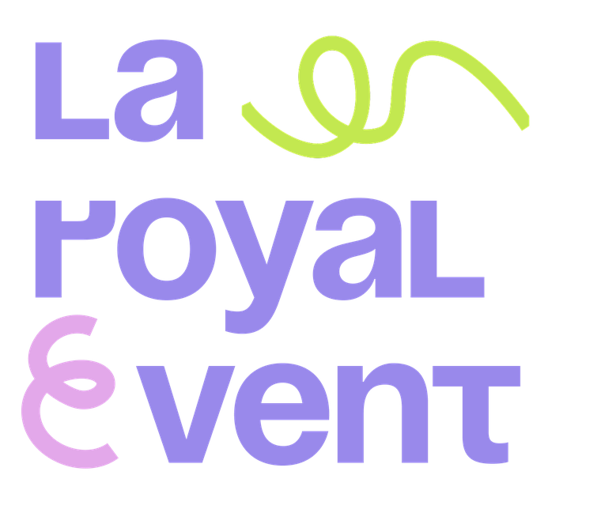

Нил · три судна · приложение к презентации
Два модуля — «Каир» и «Нил» — и пять готовых сочетаний. Каждый модуль расписан по дням отдельно, чтобы ничего не смешивалось.
Как собирается поездка
1 день — прилёт, отель, вечер в городе.
2 дня — + Гиза: квест «Код пирамид», пирамида Хеопса только для группы, ужин в Lucida. По желанию — «Ночь в музее».
3 дня — + Большой Египетский музей, конференция в отеле, вечер на яхте по Нилу. Либо день в пустыне Эль-Файюм.
Программа откатана на группах, тайминг проверен. Последнее утро — ранний рейс на реку.
3 ночи — пятница из Асуана в Луксор.
4 ночи — понедельник из Луксора в Асуан.
7 ночей — понедельник из Луксора, кольцо.
5 ночей Lumière — любой день, судно только под группу.
Soleil и Le Fayan Suites ходят по сетке операторов; день посадки задаёт день недели всей поездки.
| № | Программа | Дни недели | Всего | Судно | Группа |
|---|---|---|---|---|---|
| 1 | Каир 2 дня + Нил 4 ночи | суббота → пятница | 7 дней | Soleil или Le Fayan Suites | 30–70 |
| Сб прилёт в Каир · Вс Гиза и квест · Пн утренний рейс в Луксор, посадка · Пт выезд, рейс в Каир и домой | |||||
| 2 | Каир 3 дня + Нил 4 ночи | пятница → пятница | 8 дней | Soleil или Le Fayan Suites | 30–70 |
| Пт прилёт · Сб Гиза и квест · Вс Большой музей, конференция, яхта (или пустыня Эль-Файюм) · Пн рейс в Луксор, посадка · Пт выезд | |||||
| 3 | Каир 2 дня + Нил 3 ночи | среда → понедельник | 6 дней | Soleil или Le Fayan Suites | 20–70 |
| Ср прилёт · Чт Гиза и квест · Пт утренний рейс в Асуан, Филе, посадка · Пн выезд, рейс в Каир и домой | |||||
| 4 | Только Нил 7 ночей | понедельник → понедельник | 8 дней | Soleil или Le Fayan Suites | 30–70 |
| Пн прилёт в Луксор, посадка · неделя по кольцу без переездов · Пн выезд. Каир можно добавить 1–3 днями до посадки | |||||
| 5 | Каир 0–2 дня + Lumière 5 ночей | любой день недели | 6–8 дней | Lumière, весь борт | до 16 |
| Каир по желанию · день 1 прилёт в Луксор, посадка · острова Фавза, Бесау, Хербиаб · день 6 Абу-Симбел по желанию и выезд из Асуана | |||||
Дальше каждый модуль расписан отдельно: сначала «Каир» по дням, потом четыре варианта «Нила». Поездка складывается так: последняя ночь в Каире → ранний рейс в Луксор или Асуан → первый день речного модуля. Левая колонка — время, средняя — что происходит, правая — зачем это так и что нужно знать. Строки на сером фоне — по желанию: решаются при бронировании.
Модуль «Каир» · 1, 2 или 3 дня
Прилёт · Гиза и квест «Код пирамид» · Большой Египетский музей, конференция, яхта · или пустыня Эль-Файюм
Каирский модуль — начало любой нашей программы по Нилу. Тайминг ниже не расчётный, а отработанный: по нему мы уже провели группу, часы переездов, входов и обедов записаны по факту. Берут один, два или три дня. Один день — прилёт, отель и вечер в городе, утром рейс на реку. Два дня — плюс Гиза: Сфинкс, квест «Код пирамид», пирамида Хеопса только для группы, ужин в Lucida. Три дня — плюс Большой Египетский музей, конференция в отеле и вечер на яхте (вариант А) либо день в пустыне Эль-Файюм (вариант Б). «Ночь в музее» — вечерняя опция дня Гизы, но только когда за ней идёт третий каирский день: она заканчивается в 02:00, а рейс на реку уходит в семь утра. Последний блок — утро перелёта на реку, оно одинаково для любого набора дней.
День 1 · Каир
День без экскурсий: встретить у самолёта, провести мимо очередей, довезти до отеля. Время каждого пункта строится по рейсу группы; здесь показан прошлый рейс SU 400 Аэрофлота, прямой Москва — Каир.
| Время | Что происходит | Пояснение |
|---|---|---|
| 09:50 (МСК) | Вылет из Москвы, Шереметьево | В прошлой программе группа летела рейсом SU 400 Аэрофлота, прямой, 6 ч 25 мин в пути. Весь день строится по рейсу группы: при другом рейсе сдвигаются все часы ниже. |
| 15:15 (Каир) | Прилёт в Каир | Время прилёта по рейсу группы. Зимой Каир отстаёт от Москвы на час. |
| 15:15–15:50 | Встреча представителя у выхода из самолёта, отдельный коридор до паспортного контроля, багаж без очередей | Наш представитель встречает группу у выхода из самолёта и ведёт отдельным коридором до паспортного контроля. Формальности и багаж занимают 35 минут. Для этого заранее нужен список гостей с паспортными данными. |
| 16:00 | Посадка в трансфер у выхода из терминала | Автобус стоит у выхода из терминала. Стоимость трансфера считаем под размер группы. |
| ~17:00 | Прибытие в отель (в прошлой программе — Hyatt Centric), заселение | От аэропорта до отеля около часа. Ключи раздаём по списку в лобби, чтобы не стоять у стойки по одному. |
| вечер | Свободное время, ужин в ресторане отеля | После перелёта программу на вечер не ставим. Перед ужином коротко говорим, во сколько завтра выезд и что надеть. |
| вечер | Welcome-ужин вне отеля: Esca Cueva или Eleve, с трансфером | Вариант вместо ужина в отеле. Трансфер туда и обратно. К ужину бокал пива или вина, его стоимость уточняем отдельно. |
Ночь: Отель в Каире (в прошлой программе — Hyatt Centric)
День 2 · Гиза
Главный день Каира. Утро — Храм Долины и Сфинкс, потом три с лишним часа квеста по плато, в середине которого пирамида Хеопса закрыта для всех, кроме группы. Обед с видом на пирамиды, вечером ужин в Lucida.
| Время | Что происходит | Пояснение |
|---|---|---|
| 06:30–08:00 | Завтрак в отеле | Полтора часа, чтобы все успели. Выезд по часам. |
| 08:00–08:10 | Встреча группы в лобби | Собираемся в лобби, проверяем всех по списку. Обувь закрытая: на плато камень и песок. |
| 08:10–09:00 | Трансфер на плато Гиза | 50 минут в утреннем трафике. В автобусе вода. |
| 09:00–09:30 | Прохождение контроля, вход на территорию | Досмотр на входе на плато. На группу уходит до получаса. |
| 09:30–10:00 | Выезд на локацию к Сфинксу | Автобусом по плато до площадки у Сфинкса. |
| 10:00–10:40 | Спуск к Храму Долины и Большому Сфинксу, осмотр | Сорок минут спокойным шагом. Головной убор и вода с собой. |
| 10:40–14:00 | Квест на плато Гиза «Код пирамид» | Наш командный квест: маршрут проходит между пирамидами, задания на каждой точке. Три с лишним часа на ногах, вода в машинах сопровождения. |
| 12:00–13:00 | Пирамида Хеопса закрыта для всех, кроме группы; часть квеста проходит внутри | На этот час пирамиду закрывают для остальных посетителей. Внутри узкий наклонный коридор, душно; кто не хочет внутрь, ждёт у входа и продолжает квест снаружи. |
| 14:00–14:15 | Трансфер на обед | Ресторан на плато, 15 минут. |
| 14:15–16:00 | Обед в ресторане 9 Pyramids Lounge, итоги квеста, фотосессия | Терраса смотрит на все пирамиды. За обедом подводим итоги квеста, потом фотосессия на фоне плато. |
| 16:15–16:45 | Трансфер в отель | Полчаса. |
| 16:45–18:45 | Подготовка к ужину, отдых | Два часа в отеле. |
| 18:45–19:30 | Трансфер в ресторан Lucida | 45 минут по вечернему городу. |
| 19:30–21:00 | Ужин в ресторане Lucida | Полтора часа. Меню согласуем заранее. |
| 21:00–21:30 | Трансфер в отель | Полчаса. Если выбран вариант «Ночь в музее», после ужина едем не в отель, а в музей. |
Ночь: Отель в Каире (в прошлой программе — Hyatt Centric)
День 2 · вариант: Ночь в музее
До 21:00 день идёт как в базовом варианте. После ужина в Lucida группа едет в Большой Египетский музей, который на три часа закрыт для всех, кроме группы. Вариант для программы, где третьего каирского дня нет. Ту же ночь можно провести в Египетском музее на Тахрире.
| Время | Что происходит | Пояснение |
|---|---|---|
| 21:00–21:40 | Трансфер в Большой Египетский музей | Из Lucida до музея 40 минут. |
| 21:40–22:00 | Вход в музей, наушники; музей закрыт для всех, кроме группы | Музей закрыт для посетителей, внутри только группа и наша команда. Выдаём наушники. |
| 22:00–01:00 | «Ночь в музее»: квест по Большому Египетскому музею | Наш квест по залам музея, три часа — ровно столько, на сколько музей закрывают для группы. Второй вариант площадки — Египетский музей на Тахрире, закрытие там дешевле. |
| 01:00–01:15 | Выход, посадка в трансфер | Автобусы ждут у выхода. |
| 01:15–02:00 | Трансфер в отель | 45 минут, ночью дорога свободна. |
| 02:00 | Группа в отеле | Ночёвка в отеле. |
Ночь: Отель в Каире (в прошлой программе — Hyatt Centric), возвращение к 02:00
День 3 · вариант А
Утро в Большом Египетском музее с нашей приватной экскурсией, обед на Ниле, днём конференция в отеле, вечером ужин на яхте. Выезд 08:10. Вариант с выездом 10:30: завтрак 08:30–10:00, сбор 10:00–10:20, музей 11:20–14:50 без квеста, обед в Pier 15:20–16:30, отель 17:00, конференция 17:15–19:00, яхта 19:30–22:30.
| Время | Что происходит | Пояснение |
|---|---|---|
| 06:30–08:00 | Завтрак в отеле | Полтора часа, выезд по часам. |
| 08:00–08:10 | Встреча группы в лобби | Проверяем всех по списку. |
| 08:10–09:00 | Трансфер в Большой Египетский музей | 50 минут. |
| 09:00–09:30 | Вход в музей, наушники; приватная экскурсия с элементом квеста | Входим группой, выдаём наушники. Экскурсия наша, приватная: гид ведёт группу, по ходу маршрута задания квеста. |
| 09:30–12:30 | Экскурсия по Большому музею | Три часа: главная лестница, залы Тутанхамона, ладья Хуфу. Дольше внимание не держится. |
| 12:30–13:00 | Трансфер в ресторан Pier на Ниле | Ресторан на берегу Нила, полчаса. |
| 13:00–14:30 | Обед в ресторане Pier | Полтора часа. |
| 14:30–15:00 | Трансфер в отель | Полчаса. |
| 15:00–16:00 | Свободное время, подготовка к конференции | Час переодеться. Зал к этому времени готов, техника проверена. |
| 16:00–18:30 | Конференция в отеле на 45 человек | Два с половиной часа. Зал в отеле: аренда и оборудование уточняются под отель и дату. |
| 18:30–19:00 | Трансфер на яхту | Полчаса до причала. |
| 19:00–22:00 | Ужин на яхте и шоу | Яхта в аренде на вечер только для группы: ужин, диджей, шоу. Напитки оплачиваются отдельно, состав согласуем. |
Ночь: Отель в Каире (в прошлой программе — Hyatt Centric)
День 3 · вариант Б
Полный день за городом: джипы по заповеднику Вади-эль-Райян и Долине Китов, музей в пустыне, озеро, сэндбординг, водопады, обед в глэмпинге и закат. Вечером круиз на яхте по Нилу. Ранний подъём и поздний возврат, день длинный.
| Время | Что происходит | Пояснение |
|---|---|---|
| 06:00–07:30 | Завтрак в отеле | Выезд ранний: до Эль-Файюма полтора часа. |
| 07:30–09:00 | Трансфер из Каира в оазис Эль-Файюм | Около 100 км на юго-запад от Каира, полтора часа. |
| 09:00–09:15 | Заповедник Вади-эль-Райян: посадка в джипы, инструктаж | Пересаживаемся из автобуса в джипы. Короткий инструктаж водителей. |
| 09:15–11:45 | Сафари на джипах по Долине Китов с остановками | Вади-аль-Хитан, объект ЮНЕСКО: скелеты древних китов лежат прямо в песке. Два с половиной часа с остановками для осмотра и фото. |
| 11:45–13:00 | Археологический музей в пустыне | Музей при Долине Китов: ископаемые и история климата. Час с четвертью. |
| 13:00–13:30 | Сафари к Волшебному озеру | Полчаса на джипах. |
| 13:30–15:00 | Сэндбординг и сафари к водопадам | Доски выдают на месте. Водопады Вади-эль-Райян — между двумя озёрами заповедника. Одежда, которую не жалко: песок везде. |
| 15:00–15:30 | Переезд на джипах в пустынный глэмпинг | Полчаса. |
| 15:30–17:00 | Обед в глэмпинге, отдых, фотосессия на закате | Поздний обед в лагере, отдых, фотосессия в закатном свете. Название лагеря уточняем. |
| 17:00–19:00 | Трансфер в Каир | Два часа: вечером дорога в город дольше. |
| 19:00–20:00 | Свободное время, подготовка к ужину | Час переодеться после пустыни. |
| 20:00–21:00 | Трансфер на причал | Час по вечернему городу. |
| 21:00–00:00 | Круиз на яхте по Нилу | Три часа на воде. Яхта только для группы. |
| 00:00–00:40 | Трансфер в отель | 40 минут. |
Ночь: Отель в Каире (в прошлой программе — Hyatt Centric), возвращение к 00:40
День перелёта · Каир → Нил
Утренний рейс EgyptAir: в Луксор около 07:00 с прилётом 08:20 или в Асуан около 06:30 с прилётом около 08:00. Город зависит от маршрута судна. Блок одинаков для любого набора каирских дней.
| Время | Что происходит | Пояснение |
|---|---|---|
| 03:30 | Подъём, чемоданы у дверей, завтрак-набор | Чемоданы выставляем у дверей номера к 03:45, их собирает персонал. Горячий завтрак в это время не подают, берём набор с собой. |
| 04:15 | Выезд в аэропорт | От отеля на западе Каира до аэропорта около часа, в аэропорту за полтора часа до вылета. Группу больше 10 человек бронируем через групповой отдел EgyptAir, регистрация у одной стойки на всю группу. |
| ≈07:00 → 08:20 Луксор / ≈06:30 → ≈08:00 Асуан | Перелёт на реку | Около часа в воздухе. Какой рейс — зависит от того, откуда стартует судно. Норма багажа EgyptAir 23 кг. |
Ночь: На борту судна
Модуль «Нил»
Из Луксора в Асуан · Soleil или Le Fayan Suites · регулярное отправление по понедельникам
Классическая речная часть: Луксор, западный берег, Эдфу, Ком-Омбо, два дня в Асуане. Сетка оператора: посадка в понедельник с 12:00, ночи в Луксоре, Эдфу, Асуане и Асуане, выезд в пятницу до 08:00. Абу-Симбел по желанию ставим на утро четверга, как и оператор, тогда в пятницу вся группа летит в Каир одним утренним рейсом. До 50 гостей — Le Fayan Suites или Soleil, 70 — Soleil (35 кают по двое).
Понедельник · Луксор
Утренний рейс из Каира прилетает в 08:20. Посадка на судно с 12:00, поэтому Карнак смотрим до посадки, пока там свет и прохлада. При прямом рейсе в Луксор день строится так же от времени прилёта.
| Время | Что происходит | Пояснение |
|---|---|---|
| ≈07:00–08:20 | Перелёт в Луксор | Вылет под дату 06:50–07:15, около часа в воздухе. Дневной MS274 не подходит: прилёт в Луксор около 14:40, к посадке и Карнаку не успевает. |
| 09:15–11:00 | Карнакский храм | В храм едем прямо из аэропорта: раньше 12:00 на судно не пустят, а утром в Карнаке мягкий свет и ещё не жарко. Полтора часа: аллея сфинксов, гипостильный зал на 134 колонны, обелиск Хатшепсут, священное озеро. Обойти всё не пытаемся. Вода и головной убор; чемоданы ждут в автобусах под присмотром. |
| 11:30 | Переезд к причалу | 15–20 минут. В Луксоре суда стоят борт к борту: если наше второе или третье от берега, проходим через лобби соседей, здесь так принято. Чемоданы несёт команда судна. |
| 12:00 | Посадка на судно | Оператор пускает на борт с 12:00, каюты выдают по готовности: в правилах так и написано, после обеда или по наличию. Если часть кают ещё убирают, ждём в лаунже с напитками; чемоданы уже на борту. |
| 13:00 | Обед на борту | С этого обеда начинается пансион судна: четыре дня еда, вода, чай, кофе и соки входят в тариф. Вино и пиво по счёту или барным пакетом на группу; это решаем до поездки, чтобы на борту не было разговоров о деньгах. |
| 14:00–16:30 | Отдых, верхняя палуба | Судно стоит у причала. Бассейн, сон, кофе. После подъёма в половине четвёртого эти часы нужны. |
| 16:45–18:30 | Луксорский храм | От причала 5–20 минут пешком или короткий переезд, смотря куда нас поставят на набережной. Приходим засветло: в 17:20 заход, через полчаса включают подсветку, так что видим храм и при дневном свете, и в огнях. Мечеть Абу-эль-Хаггаг стоит прямо на колоннах, на уровне второго этажа: до раскопок конца XIX века храм был засыпан до этой отметки, и мечеть строили на тогдашнем уровне земли. |
| 19:30 | Ужин. Ночь у причала в Луксоре | За ужином напоминаем, кто летит на шаре, и объявляем время раннего завтрака. Судно ночует у причала, никуда не идёт. |
Ночь: На борту, причал Луксора
Вторник · западный берег → Эдфу
Утром некрополь на западном берегу, после обеда судно отходит. Порядок внутри утра не случайный: сначала гробницы, где прохладно, потом открытые террасы Хатшепсут, пока солнце невысоко. Общий выезд в 08:45, чтобы летавшие на шаре успели вернуться и позавтракать.
| Время | Что происходит | Пояснение |
|---|---|---|
| 05:00 | Шар на рассвете — решение группы при бронировании, полёт по погоде | Выезд с судна в 05:00, переправа на западный берег. Пока на поле надувают шары, пьём чай у машин; взлетаем, когда разрешит диспетчер. Полёт около 06:30–07:15, рассвет в 06:40 застаёт в воздухе над Долиной царей и храмом Хатшепсут. Летим корзинами до восьми человек, платят за корзину: на 16 гостей две, на 24 три, дальше четыре. Решение группа принимает при бронировании, стоимость фиксированная на корзину и на человека не делится. При ветре власти отменяют полёты, решение в то же утро, наземная программа дня от этого не меняется; при отмене по погоде оплата возвращается или переносится по условиям оператора полётов, уточняем при бронировании. В поле и на высоте +8, нужна тёплая куртка. На судне снова к 08:00. |
| 07:00 | Завтрак | Для оставшихся на борту с семи. Летавшие завтракают по возвращении, около 08:00; кухня знает и держит горячее. |
| 08:45 | Выезд на западный берег | Через мост и вдоль полей 30–40 минут до Долины царей. Вода и головные уборы: в Долине тени нет совсем. |
| 09:30–11:15 | Долина царей | В общий билет входят три гробницы, выбираем на месте по очередям; от входа к гробницам возит электропоезд. Гробницы Тутанхамона и Сети I по отдельным билетам, по желанию. Телефоном без вспышки снимать можно, на камеру отдельный билет; правила меняются, гид уточнит на месте. В гробницах узко и душно, темп спокойный. |
| 11:30–12:30 | Храм Хатшепсут | Десять минут от Долины. Три террасы под обрывом, тени нет, поэтому сюда до полудня или сразу после. Часовни Хатхор и Анубиса на второй террасе обычно пропускают, а там сохранился цвет. |
| 12:45 | Колоссы Мемнона | Остановка на 15 минут по дороге к реке. Две сидящие статуи по 18 метров; на ногах граффити римских путешественников, приезжавших слушать, как статуя «поёт» на рассвете. |
| 13:30 | Возврат на судно, обед, отход | Как только все на борту, судно отходит. До Эсны около трёх часов хода. Чемоданы никто не трогает: каюты едут с нами. |
| 15:00–17:00 | Полдня на воде | Чай на верхней палубе, закат в 17:20 над рекой. На ходу ветер, на палубе заметно холоднее, чем на берегу, куртка пригодится. |
| ≈17:00 | Подход к Эсне, шлюз по очереди | Судно встаёт в очередь на шлюз. Ждать можно час, можно пять, проходят часто ночью. Это не сбой, так устроена река. При обычной очереди на среду это не влияет; при задержке в 4–5 часов выход в Эдфу сдвигаем на час, а Ком-Омбо смотрим днём. Ужин подают по расписанию, где бы мы ни стояли. |
| 20:00 | Ужин. Ночь в Эдфу | После шлюза до Эдфу ещё 2–3 часа хода. Швартуемся вечером или уже ночью, когда все спят; утром просыпаемся у причала Эдфу. |
Ночь: На борту, Эдфу (приход вечером или ночью, после шлюза)
Среда · Эдфу → Ком-Омбо → Асуан
Самый речной день: два храма прямо у воды и несколько часов хода между ними. Эдфу берём утром, пока внутри прохладно. В Ком-Омбо приходим к обеду, стоим у причала и идём в храм к четырём, когда уйдут дневные группы и солнце опустится ниже.
| Время | Что происходит | Пояснение |
|---|---|---|
| 07:00 | Завтрак | Без спешки: до храма десять минут, и группы с других судов тоже только собираются. |
| 08:00 | Конные экипажи до храма Гора | От причала в Эдфу до храма едут в калешах, по 3–4 человека, около 10 минут. На 70 гостей нужно 18–20 экипажей: заказываем заранее по списку, у каждого номер своей калеши, плата кучеру включена в программу. Кто не хочет в экипаж, едет микроавтобусом. |
| 08:15–09:45 | Храм Гора в Эдфу | Лучше всех сохранившийся храм Египта: целы крыша, стены, святилище, двери в крипты. Внутри полумрак и прохлада, полтора часа. Стоит зайти в «лабораторию» справа от гипостильного зала: на стенах вырезаны рецепты храмовых благовоний. |
| 10:15 | Возврат на борт, отход | До Ком-Омбо 2–3 часа хода. На этом участке автобусов нет: оба храма стоят у самой воды. |
| 11:00–13:00 | Палуба | Берега ближе, чем под Луксором: тростник, деревни, фелюки. Два часа, когда можно поработать с ноутбуком в лаунже или поспать на палубе. |
| 13:00 | Приход в Ком-Омбо, обед у причала | Швартуемся между 12:15 и 13:15, смотря по течению и встречным судам. Обед подают на месте. |
| 14:00–16:00 | Стоянка у Ком-Омбо | Судно стоит у стенки, причал в пяти минутах пешком от храма. В храм днём не идём нарочно: в это время там дневные группы с других судов и солнце в зените. Бассейн, палуба; кто хочет, заглянет в музей крокодилов рядом с храмом, на 15 минут. |
| 16:00–17:20 | Ком-Омбо | Храм двойной: половина Себеку-крокодилу, половина Хароерису (Гору Старшему), два входа и два святилища. К четырём группы уходят, солнце садится за реку в 17:20, и последний час свет ложится на рельефы сбоку. Для этого храма лучшего времени нет. Полтора часа до заката. |
| 17:30 | Отход в Асуан | Около трёх часов хода, уже в темноте. |
| 20:00 | Ужин в пути, приход в Асуан | Ужин подают на ходу; швартовка в Асуане между 20:30 и 21:00. Суда стоят борт к борту, на берег вечером выйти можно. Летящим завтра в Абу-Симбел напоминаем: подъём в 04:30. |
Ночь: На борту, Асуан
Четверг · Асуан
Судно весь день стоит. Основная группа утром едет на Филе, плотину и обелиск; кто хочет, летит на рассвете в Абу-Симбел и возвращается к обеду, как в сетке самого оператора. После обеда все вместе на лодках к нубийцам, вечером либо приватный вечер на Филе, либо ужин на палубе.
| Время | Что происходит | Пояснение |
|---|---|---|
| 04:30–13:00 | Абу-Симбел самолётом — по желанию | Подъём в 04:30, завтрак-набор, выход с судна в 05:00, в аэропорту Асуана к 05:45. Рейс в 06:55, около 45 минут лёта над озером Насер, два часа у Большого храма Рамсеса II и храма Нефертари, назад в Асуане в 12:15, на судне к 13:00, к обеду. Оплачивается отдельно; места бронируем через групповой отдел EgyptAir как можно раньше, их на этом рейсе немного. Летавшие пропускают утреннюю программу: Высокую плотину и обелиск не увидят, а Филе только вечером, если согласован приватный вечер. Говорим об этом заранее, чтобы каждый выбирал с открытыми глазами. |
| 07:00 | Завтрак | Обычное время. Двигатели молчат, судно у причала. |
| 08:00 | Выезд на причал Шеллал | 20–25 минут автобусом на юг, за старую плотину. К острову Филе дороги нет, дальше только по воде. |
| 08:30 | Катер до острова | Около 10 минут, катера по 20–30 человек. Утром вода гладкая, но на ней холодно, куртка. |
| 08:45–10:15 | Остров Филе | Храм Исиды, перенесённый целиком на соседний остров Агилкия при строительстве плотины. Полтора часа: первый пилон, колоннады, киоск Траяна у воды, главный кадр острова. |
| 10:45 | Высокая плотина | 15–20 минут на гребне: с одной стороны озеро Насер, с другой Нил. Смотровая открытая, ветрено, долго не стоим. |
| 11:30–12:15 | Незаконченный обелиск | Гранитная каменоломня в черте города. Обелиск длиной 42 метра треснул в породе, его так и бросили, и по нему видно, как резали гранит. 30–40 минут. |
| 13:00 | Обед на борту | Вся группа снова вместе: летавшие в Абу-Симбел подъезжают из аэропорта к часу. После обеда час на палубе или в бассейне. |
| 15:00–17:20 | Нубийская деревня на моторных лодках | От причала через первый порог около 40 минут, мимо острова Элефантина и заповедника. В деревне чай в нубийском доме, крашеные стены, рынок. Назад к закату в 17:20. Лодки на 20–25 человек, жилеты на борту; группе 70 нужно три-четыре. |
| 18:00–21:30 | Приватный вечер на острове Филе — решение группы при бронировании | Выезд с судна в 18:00, катер от Шеллала в 18:30, на острове 18:45–21:30. Остров закрывают для посторонних: встреча с напитками, храм в подсветке, светозвуковой показ. Ужин на острове считается отдельно от аренды острова. Разрешение выдаёт Высший совет по древностям по заявке через лицензированного оператора; свет, декор и число гостей согласуются отдельно, паспортные данные нужны за восемь недель. Решение группа принимает при бронировании: стоимость фиксированная на группу и на человека не делится. Если вечер согласован, ужин на борту в этот день не подают, едим на острове. Обратно 10 минут катером и 20–25 автобусом, на судне около 22:15. |
| 19:30 | Ужин на борту | Базовый вариант вечера: ужин на верхней палубе у причала, одеться теплее. Если вечер на Филе согласован, ужин переезжает на остров. |
| ≈22:15 | Возврат на судно после вечера на Филе | Только если вечер на острове состоялся. Напоминаем всем: завтра чемоданы у кают в 05:30, собрать их лучше с вечера. |
Ночь: На борту, Асуан
Пятница · Асуан → Каир → домой
День построен вокруг утренних рейсов из Асуана: EgyptAir в 08:45, запасной Nile Air в 09:10. Между 09:10 и 20:15 рейсов из Асуана нет: Air Cairo в 17:30 летает только по вторникам и четвергам, в пятницу его нет. Поэтому с судна выходим в 06:30, а не в восемь, как разрешает оператор, и вся группа летит одним рейсом.
| Время | Что происходит | Пояснение |
|---|---|---|
| 05:30 | Чемоданы у кают, завтрак с 05:45 | Команда выносит багаж на берег. Ранний завтрак просим у оператора заранее, стандартный начинается позже. |
| 06:30 | Выход с судна | Оператор требует освободить каюты до 08:00, но нам нужно раньше: до аэропорта 30–40 минут, группе от 30 человек с багажом нужно быть в аэропорту за полтора часа до вылета, рейс в 08:45. Выйди мы в восемь, утренний рейс потерян, следующий только в 20:15. |
| 06:40 | Трансфер в аэропорт Асуана | Автобусы у причала. Аэропорт за городом, утром дорога пустая, 30–40 минут; в аэропорту к 07:15, за полтора часа до вылета. |
| 08:45–10:10 | Рейс Асуан — Каир, MS083 | EgyptAir, полтора часа. Рейс ходит шесть раз в неделю, под конкретную пятницу подтверждаем при бронировании. Группу больше 10 человек бронируем через групповой отдел EgyptAir, регистрация у одной стойки. Запасной вариант NP82 Nile Air в 09:10, прилёт 10:35. |
| 10:10 | Прилёт в Каир, переход на международный вылет | Багаж получаем и сдаём заново на международный рейс. Между внутренним и международным рейсом закладываем не меньше трёх часов. |
| с 14:00 | Международный вылет домой | Это условие под билеты: из Каира не раньше 14:00. Дневной рейс после двух подходит с запасом, утренний в 10:30 нет. Если билеты домой уже куплены на утро, нужна ночь в Каире. |
| 06:55–12:15 (запасной вариант) | Абу-Симбел в пятницу — только если не вышло в четверг | Для тех, кто хочет и Филе утром четверга, и Абу-Симбел: выход с судна с чемоданами в 05:15, рейс 06:55, возвращение в Асуан в 12:15. Дальше в Каир только вечерним рейсом MS085 в 20:15, домой ночью или в субботу с ночью в Каире; днём чемоданы в отеле Асуана, обед в городе, с этой частью группы остаётся наш сопровождающий. Вариант делит группу надвое и стоит дороже четвергового, поэтому держим его как запасной и решаем до покупки международных билетов. |
Ночь: Перелёт домой из Каира
Модуль «Нил»
Из Асуана в Луксор · Soleil или Le Fayan Suites · регулярное отправление по пятницам
Самый ходовой формат на Ниле: три ночи вниз по течению, от Асуана к Луксору. Посадка в пятницу с 12:00, суббота на два храма и переход, воскресенье целиком на Луксор, выезд в понедельник до 08:00. До 40 гостей — Le Fayan Suites, больше — Soleil. День отправления из Асуана подтверждаем у оператора под дату: на его сайте одна из таблиц подписана иначе.
Пятница · Асуан
Утренний рейс из Каира прилетает в Асуан около 08:00. До посадки в 12:00 успеваем Филе, плотину и обелиск. Абу-Симбел в этот день не помещается: его рейс уходит в 06:55, когда группа ещё летит из Каира.
| Время | Что происходит | Пояснение |
|---|---|---|
| ≈06:30–08:00 | Рейс Каир — Асуан | Полтора часа в воздухе. Часы — ориентир по текущему сезону (≈), рейс подбираем под дату: январского расписания Каир — Асуан пока нет. Дневным рейсом к посадке не успеть, поэтому только утренний. |
| 06:55–12:15 | Абу-Симбел самолётом — только в варианте с ночью в Асуане | Вылет из Асуана в 06:55, назад в 12:15, около 45 минут лёта в каждую сторону, два часа у Большого храма Рамсеса II и храма Нефертари. Группе, которая этим же утром летит из Каира, не успеть. Если ночевали в Асуане с четверга, летим, а из аэропорта едем прямо на судно к обеду; Филе переносим на вторую половину дня вместо нубийской деревни. |
| 08:45 | Переезд к причалу Шеллал, катер на Филе | От аэропорта до причала 20 минут, катер идёт ещё десять. В девять на острове свободно, к одиннадцати подтягиваются группы из отелей. |
| 09:15–10:45 | Остров Филе, храм Исиды | Храм перенесли на остров Агилкия в 1970-е; на воротах Адриана последняя иероглифическая надпись в истории. Полутора часов хватает на храм и киоск Траяна. Головной убор и вода: тени на острове почти нет. |
| 11:00–12:15 | Высокая плотина и Незаконченный обелиск | От Шеллала до плотины десять минут, от плотины до обелиска в городе около двадцати, от обелиска до причала судна ещё десять. На каждой точке 15–20 минут, к причалу подходим около 12:15. |
| 12:15–13:30 | Посадка на судно, обед на борту | Полдень — самое раннее время посадки по правилам оператора; в ответах на частые вопросы на сайте написано «после обеда или по наличию». Если каюты ещё убирают после предыдущей группы, сначала обедаем, ключи получаем после. Чемоданы из аэропорта везёт отдельная машина, в каюты их заносят без участия гостей. |
| 13:30–15:00 | Отдых на борту | День начался в четыре утра. Судно стоит у причала, полтора часа без программы: бассейн на верхней палубе, сон, кофе. |
| 15:00–17:20 | Нубийская деревня на моторных лодках | Вверх по течению через пороги сорок минут, столько же назад, в деревне около часа: чай, расписанные дома, желающим ручной крокодил. Лодки на 20–25 человек, жилеты на борту; группе 70 нужно три-четыре. Обратно выходим не позже 16:40, чтобы пройти пороги засветло: закат в январе в 17:20. На воде продувает, нужна ветровка. |
| 19:30 | Ужин на борту | Знакомимся с командой судна, закрепляем за группой столы в ресторане на все три дня. Ночь у причала в Асуане; суда стоят борт к борту, на берег выходят через соседние. |
Ночь: На борту, Асуан
Суббота · Ком-Омбо, Эдфу
Самый длинный ходовой день. Отход около 05:30, так устроена сетка оператора: три часа до Ком-Омбо, храм к девяти, Эдфу после обеда, к шлюзу Эсны подходим вечером.
| Время | Что происходит | Пояснение |
|---|---|---|
| 05:30 | Отход из Асуана | Время отхода задаёт оператор: это регулярный рейс, на борту есть и другие пассажиры. До Ком-Омбо три часа хода. Кто проснётся в семь, увидит реку уже за городом. |
| 07:30–08:45 | Завтрак в движении | Шведский стол открыт полтора часа, спешить некуда. Удобное время для рабочих разговоров: связь на этом участке ещё держится. |
| 09:00–10:30 | Ком-Омбо | Причал у самой стены храма, от трапа до входа пять минут пешком. Храм двойной: половина посвящена Себеку-крокодилу, половина Хароерису (Гору Старшему), богу-соколу. Рядом рельеф с медицинскими инструментами и музей мумий крокодилов. |
| 10:30 | Отход на Эдфу | Два-три часа хода, палуба открыта, обед в пути. |
| 13:00 | Обед на борту | Обедаем в движении, у окна. К концу обеда подходим к Эдфу. |
| 14:00–16:00 | Храм Гора в Эдфу, конные экипажи | От причала до храма едем в калешах, десять минут. Калеши по 3–4 человека, на 70 гостей 18–20 экипажей, заказываем заранее по списку. Храм сохранился целиком: крыша, стены, святилище. Внутри полтора часа; во второй половине дня свет боковой, рельефы видны лучше, чем в полдень. |
| 16:30 | Отход на Луксор, шлюз в Эсне | До Эсны 2–3 часа хода, дальше шлюз. Суда проходят его по очереди, ожидание от получаса до нескольких часов, чаще ночью. От Эсны до Луксора ещё около трёх часов. Когда придём в Луксор, никто не обещает: обычно ночью или под утро воскресенья. |
| 17:00–17:40 | Чай на палубе, закат на воде | Закат около 17:20. После него быстро холодает, к ночи +10 и ниже. Пледы выдают, свитер лучше свой. |
| 20:00 | Ужин в движении | Ужин подают независимо от того, идёт судно или стоит у шлюза. Ночь в пути; просыпаемся в Луксоре или на подходе к нему. |
Ночь: На борту, переход Эдфу — Эсна — Луксор (приход в Луксор ночью или под утро)
Воскресенье · Луксор
День, ради которого едут: утром некрополь западного берега, после обеда два храма восточного. Плотно, но без провалов: причал в Луксоре в центре города, до всего близко.
| Время | Что происходит | Пояснение |
|---|---|---|
| 05:00–08:00 | Шар на рассвете | Решение группы при бронировании: летим корзинами до восьми человек, платят за корзину — на 16 гостей две, на 24 три, дальше четыре. Стоимость фиксированная на группу и не делится на человека, поэтому «по желанию» на месте не продаётся. Выезд в пять, полёт 06:30–07:15, рассвет в 06:40. При ветре власти отменяют полёты, в январе это случается; при отмене по погоде оплата возвращается или переносится по условиям оператора полётов, уточняем при бронировании. Второе условие: судно должно стоять в Луксоре к пяти утра, иначе шар снимает шлюз. Летавшим завтрак-бокс на старте, на судно возвращаются к 08:00. |
| 07:30–08:30 | Завтрак на борту | Час на завтрак для тех, кто не летал. Летавшие успевают к кофе: с поля до причала 30–40 минут. |
| 08:30 | Переезд на западный берег | Через мост, 30–40 минут до Долины царей. Едем именно утром: в долине нет тени, к полудню там +25 и автобусы из Хургады. |
| 09:15–11:15 | Долина царей, три гробницы | В стандартный билет входят три гробницы из открытых в этот день; какие именно, египтолог решает на месте по очередям. Внутри прохладно и тесно. Телефоном без вспышки снимать можно, на камеру — отдельный билет; правила меняются, гид уточнит на месте. Три спуска с переходами занимают два часа. |
| 11:30–12:30 | Храм Хатшепсут | Десять минут переезда. Три террасы в скале, рельефы экспедиции в Пунт. Часа достаточно: подняться на верхнюю террасу и спуститься. |
| 12:45 | Колоссы Мемнона | Пятнадцать минут у дороги к мосту: две сидящие статуи, фото, дальше к судну. |
| 13:30 | Обед на борту | Судно стоит у причала в центре Луксора, до Карнака десять минут автобусом. После обеда час отдыха. |
| 15:30–17:00 | Карнакский храм | Гипостильный зал, обелиск Хатшепсут и священное озеро за полтора часа. Приходим к концу дня: солнце низко, колонны дают длинную тень, групп меньше, чем утром. Весь комплекс за раз не обойти, и мы не пытаемся. |
| 17:30–18:45 | Луксорский храм в подсветке | Закат в 17:20, подсветку включают сразу после. Храм стоит у набережной в двух километрах от Карнака, рядом с причалом. Мечеть Абу-эль-Хаггаг стоит на уровне второго этажа: до раскопок конца XIX века храм был засыпан до этой отметки. |
| 19:00–22:00 | Приватный вечер в храме | По согласованию и решению группы при бронировании: стоимость фиксированная на группу и не делится на человека. В Карнаке ужин возможен после закрытия, с 19:00; в Луксорском храме поздним вечером, время задаёт разрешение. Оформляет лицензированный оператор по разрешению Высшего совета по древностям: паспортные данные гостей за восемь недель, свет и декор согласуются отдельно по каждому храму. В договор попадает только после письменного подтверждения. |
| 20:00 | Прощальный ужин на борту | Базовый вариант вечера. Верхняя палуба или ресторан, по погоде. Чемоданы просим собрать после ужина: утром выезд с судна в 07:00. |
Ночь: На борту, Луксор
Понедельник · Луксор → Каир → домой
Судно освобождаем до 08:00: в полдень на него садится следующая группа. Утренний рейс в Каир стыкуется с международным вылетом после 14:00.
| Время | Что происходит | Пояснение |
|---|---|---|
| 05:30 | Чемоданы у дверей кают | Команда судна выносит их на причал и грузит в автобус. Ручную кладь и документы держим при себе. |
| 06:00–06:45 | Завтрак | Последний завтрак на борту, полный. Счёт за бар и спа закрываем тут же, на ресепшене. |
| 07:00 | Выезд с судна, трансфер в аэропорт | До аэропорта Луксора 20–30 минут, на месте к 07:30, за полтора часа до вылета; для группы от 30 человек с багажом это минимум, регистрация у одной стойки группового бронирования. Выезд до 08:00 — правило оператора. Поздний выезд дают только по наличию, а в понедельник судно в полдень берёт новую группу, так что рассчитывать на него нельзя. |
| ≈09:00–10:00 | Рейс Луксор — Каир | Вылет ≈09:00–09:30: подтверждённого январского расписания нет, час ставим под дату перед договором. Час в воздухе. В Каире группа переходит на международный рейс. |
| 10:00–13:30 | Каир, ожидание в аэропорту | Между прилётом и международным вылетом закладываем не меньше трёх часов. Если билеты домой не в одном бронировании с внутренним рейсом, багаж получаем и сдаём заново; на это три часа и уходят. Бизнес-зал на группу по запросу, за отдельную плату. |
| 11:00–18:00 | Если рейс домой вечером: Хан-эль-Халили, либо Саккара и Мемфис | При вылете не раньше 21:00 из аэропорта можно выехать. Ближе Хан-эль-Халили с обедом в городе, это основной вариант. Саккара и Мемфис открыты 08:00–17:00, от аэропорта 1–1,5 часа в каждую сторону, на месте три часа с обедом; складывается только без пробок. Чемоданы едут в багажной машине или сдаются в камеру хранения. Назад в аэропорт за три часа до вылета. |
| 14:00 | Международный вылет — не раньше | От этого зависит, какие билеты домой брать: рейс из Каира раньше 14:00 после утреннего вылета из Луксора не подходит, стыковка не складывается. |
Ночь: Перелёт домой, ночёвки нет
Модуль «Нил»
Кольцо Луксор — Асуан — Луксор · Soleil или Le Fayan Suites · одно судно всю неделю
Программа для группы, которая Каир уже видела и хочет неделю без чемоданов: одно судно и одна каюта на все семь ночей. Сетка оператора такая: посадка в Луксоре в понедельник с 12:00, первая ночь в Луксоре, ночь в Эдфу, три ночи в Асуане, суббота в пути с приходом в Луксор, воскресенье снова в Луксоре, выезд в понедельник до 08:00. Храмы между Луксором и Асуаном смотрим по пути на юг, Карнак оставляем на воскресенье; переходы идут днём, с палубы, ночью судно стоит у причала, кроме вторника, когда после шлюза швартуемся в Эдфу, и субботы, когда приход в Луксор может сдвинуться на ночь. Свободны вторая половина четверга, пятничное утро у тех, кто не летит в Абу-Симбел, и воскресенье после обеда: это время под рабочие сессии в салоне или отдых. Абу-Симбел добавляется по желанию и считается на человека; шар и приватные вечера в храмах — решение группы при бронировании: стоимость фиксированная на группу и на человека не делится. До 50 гостей — Le Fayan Suites или Soleil, 70 — Soleil, 35 кают по двое. Группа 30–70 означает либо фрахт всего судна, либо блок кают на регулярном рейсе; во втором случае часы отхода и стоянок в среду и субботу назначает судно, такие строки ниже помечены знаком ≈.
Понедельник · Луксор
День без экскурсий, кроме одной: Луксорский храм на закате. Задача дня простая: довезти группу до борта и дать ей выдохнуть после перелётов.
| Время | Что происходит | Пояснение |
|---|---|---|
| 08:20 | Прилёт в Луксор, встреча | Наш сотрудник ждёт в зале прилёта и помогает с багажом. Автобусы у выхода, до причала 25–30 минут через город. |
| 09:00 | Багаж на борт, кофе на верхней палубе | Каюты предыдущая группа освободила до 08:00, уборка идёт до полудня. У оператора написано «посадка с 12:00, по наличию». Багаж экипаж принимает сразу, группа ждёт в лаунже или на солнечной палубе. Кому не сидится, гид проведёт по набережной. Раннюю посадку запрашиваем, обещать её нельзя. |
| 12:00 | Посадка, распределение кают | Ключи выдаём по списку, согласованному заранее, чтобы 30–70 человек не стояли у стойки. Короткий брифинг: где собираемся, во сколько ужин, как устроено судно. |
| 13:00 | Обед на борту | Первый приём пищи судового пакета. Дальше всю неделю полный пансион: завтрак, обед, ужин, вода, чай, кофе, безалкогольные напитки. Алкоголь по счёту или барным пакетом, решаем до поездки. |
| 14:00–16:30 | Отдых, судно стоит у причала | Подъём был в четыре утра, группе нужен сон. Кто спать не хочет, идёт в бассейн на солнечной палубе или в салон. Днём +22…+25. |
| 14:40 | Прилёт дневного рейса для части группы | MS274 садится около 14:40, на борту к 15:30, к выезду в храм успевают. Карнак в этой программе стоит в воскресенье, так что опоздание к посадке ничего не ломает. |
| 16:45 | Выезд в Луксорский храм | Храм стоит на набережной, от причала 5–10 минут автобусом. Выезжаем за полчаса до заката, чтобы застать и дневной свет, и подсветку. |
| 17:00–18:30 | Луксорский храм | Закат в январе около 17:20, подсветку включают сразу после. Полутора часов хватает на двор Рамсеса II, колоннаду Аменхотепа III и святилище. Обратите внимание на мечеть на уровне второго этажа: до раскопок конца XIX века храм был засыпан до этой отметки. |
| 19:30 | Ужин на борту | Двигатели у причала выключены, ночь тихая. На воде после заката +8…+10 и ветер, куртка нужна каждый вечер недели. Кто летит утром на шаре, встаёт в 04:30: напоминаем за ужином и раздаём сухие пайки. |
Ночь: На борту, у причала в Луксоре
Вторник · западный берег
Главный экскурсионный день. Выходим рано, пока в гробницах прохладно и мало людей, к обеду возвращаемся, и судно уходит на юг. Вечером шлюз в Эсне, ужин по готовности.
| Время | Что происходит | Пояснение |
|---|---|---|
| 04:30–08:45 | Шар на рассвете, решение группы при бронировании | Выезд с причала около 05:00, переправа на западный берег, полёт примерно 06:30–07:15 над Долиной царей и храмом Хатшепсут. После посадки летавшие на судно не возвращаются: машина полётной компании везёт их к Долине царей, где в 08:45 они встречают группу у входа. Завтрак у них сухой паёк, собранный накануне. Летим корзинами до восьми человек, платят за корзину: на 16 гостей две, на 24 три, на 32 четыре, дальше по корзине на каждые восемь. Компанию выбираем по безопасности, не по цене. Стоимость фиксированная на группу и на человека не делится, поэтому решение группа принимает при бронировании, не на месте. При ветре власти отменяют полёты, решение принимают утром; оплата тогда возвращается или переносится по условиям оператора полётов. На рассвете +8…+10. |
| 07:00 | Завтрак | Шведский стол на борту. Выезжаем рано: после десяти в Долине царей очереди, а у храма Хатшепсут нет тени. |
| 08:00 | Выезд на западный берег | Автобусы через мост, 30–40 минут до Долины царей. С собой вода и головной убор, обувь закрытая: в гробницах ступени и пыль. Телефоном без вспышки снимать можно, на камеру отдельный билет; правила меняются, гид уточнит на месте. |
| 08:45–10:30 | Долина царей, три гробницы | Общий билет даёт три гробницы из открытых в этот день; какие именно, гид выбирает по очередям. Гробница Тутанхамона идёт отдельным билетом, берём заранее по желанию. От входа ходит электропоезд. Полтора-два часа для группы 30–70 реальный срок: внутри узко, заходят по 10–15 человек. |
| 10:45–11:45 | Храм Хатшепсут | Десять минут от Долины. Три террасы под скалой и много солнца: к полудню здесь жарко даже в январе. Поднимаемся на вторую террасу к часовням Хатхор и Анубиса, где сохранился цвет. |
| 12:00 | Колоссы Мемнона | Пятнадцать минут по дороге к реке. Две статуи у шоссе, автобус останавливается рядом. На ногах северного колосса видны надписи римских паломников. |
| 12:45 | Возврат на судно | Судно отходит после обеда и опоздавших ждать не будет, поэтому гиды пересчитывают группу по автобусам перед выездом. |
| 13:00 | Обед на борту, отход на юг | До Эсны около трёх часов хода. После обеда палуба: по берегам тростник, деревни, рыбацкие лодки. |
| ≈16:00–20:00 | Шлюз в Эсне | К шлюзу подходим около 16:00, судно встаёт в очередь. Проход занимает час, а может растянуться до ночи: единственная точка маршрута, где время не зависит ни от нас, ни от капитана. Закат около 17:20 смотрим с палубы, пока ждём. |
| 20:00 | Ужин по готовности судна | Если шлюз задержал, ужин подают позже; это условие судового пакета, не доплата. От Эсны до Эдфу ещё 2–3 часа хода, швартуемся ночью. |
Ночь: На борту, Эдфу. Приход поздно вечером
Среда · Эдфу, Ком-Омбо, Асуан
Храм Гора смотрим первыми, пока к причалу не подошли другие суда. Потом пять-шесть часов хода с остановкой в Ком-Омбо, где храм стоит у самой воды, и приход в Асуан к вечеру.
| Время | Что происходит | Пояснение |
|---|---|---|
| 06:30 | Завтрак | Выход в 07:15. До девяти утра в Эдфу тихо, потом к причалу подходят ещё 4–6 судов, и в храме становится тесно. |
| 07:15 | Конные экипажи к храму | От причала до храма Гора 10 минут в калешах, по 3–4 человека. На 70 гостей 18–20 экипажей, заказываем заранее по списку через одного ответственного, иначе на причале начинается торг. Утром +10, нужна кофта. |
| 07:30–09:00 | Храм Гора в Эдфу | Самый сохранный храм Египта: крыша, стены и святилище на месте, в нишах крипты для храмовой утвари. За полтора часа проходим пилон, двор, два гипостильных зала и святилище с гранитным наосом. Гид покажет «лабораторию» справа от зала: на её стенах вырезаны рецепты храмовых благовоний. |
| 09:15 | Возврат на судно | Экипажи ждут у выхода, те же номера. Отходим около 10:00. |
| 10:00–13:00 | Ход до Ком-Омбо | Два-три часа на воде, к Ком-Омбо подходим около 13:00. Корпоративной группе это окно под рабочую сессию в салоне, остальным палуба и бассейн. Самый пустой участок реки: пустыня подходит к воде с обеих сторон. |
| ≈13:00 | Приход в Ком-Омбо, обед у причала | Швартуемся около 13:00, обедаем на стоянке, в храм выходим около 14:00. |
| ≈14:00–15:30 | Ком-Омбо | Причал у самого храма, пять минут пешком. Двойной храм Себека и Хароериса (Гора Старшего): два входа, две оси, два святилища. Рядом музей крокодилов с мумиями священных животных, заходим на 15 минут. Часы ориентировочные: на регулярном рейсе длину стоянки задаёт судно, а не мы. |
| ≈15:30 | Отход в Асуан | Около трёх часов хода. Закат в 17:20 встречаем на реке, с верхней палубы. |
| ≈18:30 | Приход в Асуан, ужин в 20:00 | Швартуемся к 18:30–19:00, уже в темноте. Суда в Асуане стоят борт к борту; на берег выходим через лобби соседних судов, в порту это норма. Следующие три ночи судно стоит здесь. |
Ночь: На борту, Асуан
Четверг · Асуан
Утром три объекта Асуана одним выездом, после обеда свободное время. Вечер на палубе или, по согласованию, на острове Филе.
| Время | Что происходит | Пояснение |
|---|---|---|
| 07:00 | Завтрак | Выезд в 08:00. Утро в Асуане прохладное, днём до +25, одеваемся слоями. |
| 08:00 | Выезд с причала | Автобусы на юг через город, 20 минут до плотины. |
| 08:20–08:50 | Высокая плотина | Полчаса на месте. Со смотровой с одной стороны озеро Насер, с другой Нил; сразу понятно, зачем переносили Филе и Абу-Симбел. Объект охраняемый, снимать можно только со смотровой. |
| 09:10 | Причал Шеллал, катер на Филе | Десять минут от плотины. Катера на 20–30 человек, 10 минут до острова. Группе 70 нужны три катера, идут один за другим. Спасательные жилеты на борту есть. |
| 09:20–10:50 | Остров Филе | Храм Исиды, перенесённый по камню с затопленного острова. Полтора часа: первый пилон, двор с колоннадами, киоск Траяна у воды. Тени на острове нет, вода и головной убор с собой. |
| 11:15–11:45 | Незаконченный обелиск | По пути обратно, 15 минут от Шеллала. Обелиск в 42 метра треснул ещё в каменоломне и так и остался лежать. Получаса хватает; подъём по каменной лестнице, обувь удобная. |
| 12:30 | Возврат на судно, обед в 13:00 | Вторая половина дня свободна. |
| 14:30–17:30 | Свободное время | По желанию, без доплаты: фелюкка под парусом вокруг острова Элефантина (около часа, зависит от ветра, записываемся с утра), базар Асуана в 10 минутах от причала с гидом, бассейн и спа на борту по описанию судна на сайте оператора. Закат в 17:20 лучше всего виден с верхней палубы. |
| 18:00–21:30 | Приватный вечер на Филе, по согласованию | Выезд с судна в 18:00, 20 минут до Шеллала, катер в 18:30, на острове 18:45–21:30. При разрешении остров на этот вечер отдают только нашей группе: храм в подсветке, напитки, светозвуковой показ; ужин на острове считается отдельно от аренды острова. Без разрешения остаётся обычный вечерний показ вместе с другими гостями; это другой формат и другая цена. Разрешение Высшего совета по древностям оформляет лицензированный оператор: паспортные данные за восемь недель, свет и декор согласуются отдельно. Решение группы при бронировании: стоимость фиксированная на группу и на человека не делится; до получения разрешения вечер не гарантируется. На острове вечером ветрено. |
| 20:00 | Ужин на борту | Для тех, кто не едет на Филе, или для всей группы, если вечер на острове не берём. |
| ≈22:15 | Возврат на судно после вечера на Филе | Катер от острова около 21:45, на судне к 22:15. Только если вечер на острове состоялся. |
Ночь: На борту, Асуан
Пятница · Асуан
Утром группа делится: часть летит в Абу-Симбел, остальные отсыпаются на борту. К обеду все снова вместе, после обеда лодки через пороги в нубийскую деревню с возвратом к закату.
| Время | Что происходит | Пояснение |
|---|---|---|
| 04:45 | Ранний завтрак для летящих в Абу-Симбел | Наборы с собой или ранний шведский стол. Выезд в аэропорт в 05:05, 20–25 минут от причала, в аэропорту к 05:30. |
| 06:55–12:15 | Абу-Симбел самолётом, по желанию | Около 45 минут лёта, около двух часов на месте: Большой храм Рамсеса II и храм Нефертари, автобус от аэропорта 10 минут. Обратно в Асуан в 12:15, на борту к 13:00. Считается на человека, места на рейс бронируем заранее по списку. Три ночи в Асуане по сетке оператора как раз дают это утро: лететь можно только отсюда и только с ночёвкой накануне. В пустыне утром холодно, к полудню жарко, одежда слоями. |
| 08:30 | Завтрак для остающихся | Без будильника. Кто не летит, получает самое тихое утро недели, до полудня. |
| 09:30–12:30 | Свободное утро | Палуба, бассейн, набережная Асуана и базар в 10 минутах от причала, гид сопровождает. Если судно не зафрахтовано целиком, с 12:00 оно принимает пассажиров трёхдневной программы: у стойки и в лобби людно, наших кают это не касается. |
| 13:00 | Обед на борту | Группа снова вместе, летавшие возвращаются к 13:00. |
| 15:00 | Моторные лодки в нубийскую деревню | От причала через первый порог, около 40 минут по воде мимо острова Элефантина и гранитных островков. Лодки на 20–25 человек, жилеты на борту; группе 70 нужно три-четыре. Будут брызги, ветровка пригодится. |
| 15:40–16:40 | Нубийская деревня | Разноцветные дома, чай каркаде в нубийском доме; в нескольких дворах держат маленьких крокодилов и дают подержать. Здесь же продают специи и ткани. Обратно не позже 16:40, чтобы пройти пороги засветло. |
| 17:20 | Возврат на судно, закат с палубы | Солнце садится в 17:20 над островами, подходим к причалу как раз к этому часу; это последний вечер в Асуане. Чай подают на верхней палубе. |
| 20:00 | Ужин | Ложимся рано: в субботу судно отходит затемно. Чемоданы не трогаем, весь путь на одном борту. |
Ночь: На борту, Асуан
Суббота · Асуан → Луксор
Самый длинный переход недели: 10–11 часов хода плюс стоянки и шлюз. По сетке оператора судно в субботу делает плановые стоянки в Ком-Омбо и Эдфу для пассажиров, севших в Асуане накануне; наша группа оба храма видела и остаётся на борту. При фрахте целиком стоянки убираем и выходим раньше, это согласуем с оператором заранее.
| Время | Что происходит | Пояснение |
|---|---|---|
| ≈05:00–06:00 | Отход из Асуана по расписанию судна | Час назначает капитан, не мы. Выходим затемно, рассвет в 06:40 встречаем на воде. Чем раньше выход, тем короче очередь на шлюзе вечером. |
| 07:30–09:30 | Завтрак в пути | Шведский стол открыт два часа, спешить некуда. |
| ≈08:30–10:00 | Стоянка в Ком-Омбо | Около трёх часов хода от Асуана. Плановая остановка для пассажиров трёхдневной программы. Храм мы смотрели в среду; кто хочет выйти ещё раз, покупает билет сам, до храма пять минут от причала. Остальным палуба: храм хорошо виден с борта. |
| ≈12:30–15:00 | Стоянка в Эдфу, обед на борту в 13:00 | От Ком-Омбо 2–3 часа хода. Судно стоит, пока новые пассажиры ездят в храм Гора, наша группа обедает на борту. Окно удобно под рабочую сессию в салоне: судно не качает. |
| ≈15:00–17:30 | Ход до Эсны | Два-три часа. Последний закат на реке, в 17:20, смотрим с верхней палубы. |
| ≈17:30 | Шлюз в Эсне | Судно встаёт в очередь. Как во вторник: час или несколько, рядом ждут другие суда. Вечером у воды холодно. |
| 20:00 | Ужин в пути | От Эсны до Луксора около трёх часов. Если шлюз прошли быстро, швартуемся в Луксоре поздно вечером; если нет, ночью: спим в движении и просыпаемся у причала. На воскресенье это не влияет, выезд в Карнак не раньше 09:00. |
Ночь: На борту. Приход в Луксор поздно вечером или ночью
Воскресенье · Луксор
Одна экскурсия утром, Карнакский храм, остальное время свободно: для корпоративной группы это день рабочей сессии или отдыха перед дорогой. Вечером прощальный ужин.
| Время | Что происходит | Пояснение |
|---|---|---|
| 08:00 | Завтрак | Позже обычного: если судно пришло ночью, группе нужно выспаться. |
| 09:00 | Выезд в Карнак | 15 минут от причала. В Карнак лучше попасть до 11:00, потом подходят группы с других судов и автобусы с Красного моря. |
| 09:15–10:45 | Карнакский храм | Всё не обходим: аллея сфинксов, первый двор, гипостильный зал со 134 колоннами, обелиск Хатшепсут, священное озеро. Полтора часа. В зале стоит остановиться и поднять голову. |
| 11:00–13:00 | Свободное время, в 13:00 обед на борту | Возвращаемся на судно или высаживаем желающих у базара Луксора: он рядом с Луксорским храмом, 10 минут пешком до причала. |
| 14:00–17:00 | Свободный день или рабочая сессия | Салон судна под сессию, кофе-брейк входит. Остальным бассейн и палуба. Судно стоит у причала, город в пяти минутах. |
| 17:00 | Чай на палубе | Закат в 17:20 над западным берегом; в Луксоре его лучше всего видно с реки. |
| 19:30 | Прощальный вечер на палубе | Ужин на верхней палубе или в ресторане судна, музыку согласуем с оператором. Входит в программу. Вечером на палубе около +10, пледы и куртки. |
| 19:30 | Приватный вечер в Карнаке или Луксорском храме, по согласованию | Вместо палубы: храм после закрытия, только ваша группа. Разрешение Высшего совета по древностям по заявке через лицензированного оператора; свет, декор и число гостей согласуются отдельно по каждому храму, паспортные данные за восемь недель. Решение группы при бронировании: стоимость фиксированная на группу и на человека не делится; до разрешения вечер не гарантируется. |
| перед сном | Чемоданы | Чемоданы собираем вечером. Утром к 06:30 выставляем у двери каюты, экипаж вынесет их на причал. Документы и ручная кладь остаются при себе. |
Ночь: На борту, Луксор
Понедельник · Луксор → домой
Правило оператора: выезд до 08:00, к этому часу на причал приходит следующая группа. Дальше аэропорт Луксора, где группе от 30 человек надо быть за полтора часа до вылета.
| Время | Что происходит | Пояснение |
|---|---|---|
| 06:00 | Завтрак | Последний приём пищи пакета. Ранний завтрак подают с 06:00; встаём раньше, чем хотелось бы, чтобы быть в аэропорту за полтора часа до вылета. |
| 07:00 | Выезд с судна | Раньше, чем требует оператор (до 08:00): в понедельник в Луксоре садится следующая группа, а нам нужен запас в аэропорту. Экипаж выносит багаж на причал, мы сверяем чемоданы по списку. |
| 07:30 | Аэропорт Луксора | Автобусы идут 25–30 минут, в аэропорту за полтора часа до вылета. Группу больше 10 человек бронируем через групповой отдел EgyptAir, регистрация у одной стойки: наш сотрудник у стойки, паспорта на руках у каждого, очередь идёт быстрее. |
| ≈09:00–09:30 | Утренний рейс Луксор — Каир | Около часа в воздухе. Подтверждённого январского расписания нет, час ставим под дату по расписанию EgyptAir; утренний борт обычно уходит между 09:00 и 09:30. |
| не раньше 14:00 | Международный вылет из Каира | Между внутренним и международным рейсом закладываем не меньше трёх часов: при билетах на разных бронированиях багаж получаем и сдаём заново. Билеты домой на утро под эту программу не подходят. |
| вариант | Прямой международный рейс из Луксора | Если под дату есть прямой рейс из Луксора, пересадка в Каире отпадает. Проверяем по расписанию авиакомпаний, когда известны даты. |
| при позднем вылете | Дневной номер или обед в Луксоре | Если рейс домой вечером, после 08:00 группе нужно где-то быть: дневные номера в отеле Луксора или обед с видом на реку. За отдельную плату, по запросу. |
Ночь: Без ночёвки: вылет
Модуль «Нил»
Дахабия только под вашу группу · 8 кают, 16 гостей · день посадки любой
Программа для группы до шестнадцати человек, которой тишина важнее размера судна. Lumière не ходит по расписанию: день посадки ставим под ваши билеты, судно идёт только с вами. Маршрут собран по образцу оператора (брошюра, сентябрь 2026): день в Луксоре на оба берега, три ночи у островов, куда большим судам не подойти, два дня в Асуане. Храмы те же, что на обычном круизе, только ночуем не у городских причалов, а у песчаного берега, и один ужин накрываем прямо на нём. Каир добавляем одним-двумя днями до посадки; в Луксор прилетаем утренним рейсом.
День 1 · Луксор
Утром прилёт и заселение, храмы оставляем на вторую половину дня: Карнак при низком солнце, Луксорский храм к подсветке. Ночуем у причала, судно не двигается.
| Время | Что происходит | Пояснение |
|---|---|---|
| 08:20 | Прилёт в Луксор утренним рейсом из Каира | Из Каира подходит только утренний рейс: вылет около 07:00, час в воздухе. Дневной MS274 садится около 14:40 и к посадке и Карнаку не успевает. Группу больше десяти человек бронируем через групповой отдел EgyptAir, регистрация у одной стойки. Встречаем у выхода, чемоданы едут отдельной машиной. Если группа прилетела прямым рейсом накануне и ночевала в Луксоре, собираемся в лобби отеля к 11:00. |
| 09:15 | Трансфер на причал, кофе на верхней палубе | До причала 20–30 минут. Судно наше целиком, поэтому ранний заезд согласуем с оператором заранее и записываем в договор. Если каюты ещё убирают, багаж поднимают на борт, а группа ждёт на верхней палубе с кофе. В Луксоре суда стоят борт к борту и на берег ходят через соседние: это обычный порядок, не накладка. |
| 10:30 | Каюты, короткий брифинг по судну и маршруту | Кают восемь, и они разные: пять Luxury, два Junior Suite, одна Lumière Suite. Кто в какой живёт, решаем до выезда; на месте такие споры портят первый день. Капитан и наш гид проходят по быту: вода, сейфы, связь, как позвать команду. |
| 12:30 | Обед на борту | Кухня по меню, его согласуем заранее. Безалкогольные напитки входят в тариф оператора; вино и пиво отдельно, пакетом или по карте. |
| 15:00–16:45 | Карнакский храм | От причала 15 минут. После трёх часов дня групп с других судов меньше, солнце низко, свет ложится вдоль колонн гипостильного зала. Всё не обходим: зал, обелиск Хатшепсут, священное озеро, и оставляем время просто постоять, подняв голову. Удобная обувь, вода с собой. |
| 17:15–18:30 | Луксорский храм: закат и подсветка | Закат в 17:20. Приходим к последнему дневному свету и остаёмся, когда включают подсветку: лучший час для этого храма. От Карнака десять минут на автобусе. Внутри обратите внимание на мечеть: её вход висит на высоте второго этажа. До раскопок конца XIX века храм был засыпан до этой отметки, и мечеть построили на тогдашней земле. |
| 19:00 | Приветственный коктейль на верхней палубе | После заката с реки тянет ветром, +10…+12: куртка или шаль. Команда знакомится с группой. Мы проговариваем завтрашний ранний подъём для тех, кто летит на шаре: корзины забронированы заранее, уточняем только список имён по корзинам. |
| 20:00 | Ужин на борту. Ночь у причала в Луксоре | Судно стоит, спится спокойно. У тех, кто летит на шаре, подъём в 04:30, так что отбой пораньше. |
Ночь: На борту, причал Луксора
День 2 · Западный берег → остров Фавза
Утро на западном берегу, пока там прохладно и не тесно. После обеда отходим: впереди шлюз в Эсне, и чем раньше встанем в очередь, тем вернее ночуем у острова за шлюзом, а не перед ним.
| Время | Что происходит | Пояснение |
|---|---|---|
| 05:00 | Выезд на воздушный шар | В воздухе около 06:30–07:15, рассвет над некрополем в 06:40. Летим корзинами до восьми человек, платят за корзину: на 16 гостей две, на 24 три, дальше четыре. Решение группы при бронировании: стоимость фиксированная на группу и на человека не делится. При ветре власти отменяют полёты, решение приходит утром в день вылета: тогда группа просто завтракает раньше, а оплата возвращается или переносится по условиям оператора полётов. Наверху холодно, одевайтесь как на улицу в +8. |
| 08:00 | Завтрак на борту | Летавшие возвращаются к восьми, остальные спят до 07:30. Чемоданы не трогаем до конца маршрута: каюты с нами все пять ночей. |
| 08:45 | Переезд на западный берег | Автобус идёт 30–40 минут через мост. Долину ставим первой: в гробницах тесно, и лучше оказаться там до групп с больших судов. |
| 09:30–11:15 | Долина царей, три гробницы | Обычный билет даёт три гробницы из открытых в этот день; какие именно, гид выбирает по очередям на месте. Гробницы Тутанхамона и Сети I идут по отдельным билетам, скажите заранее, кто хочет. Внутри тепло и душно. Телефоном без вспышки снимать можно, на камеру отдельный билет; правила меняются, гид уточнит на месте. Очереди у входов: главный риск сдвига в этот день. |
| 11:30–12:30 | Храм Хатшепсут | Десять минут от Долины. Три террасы под скалой, тени нет совсем, но в январе это не мешает. На второй террасе часовни Хатхор и Анубиса: их обычно пропускают, а там сохранился цвет. |
| 12:40 | Колоссы Мемнона, пятнадцать минут | Остановка по дороге назад. На ногах северной статуи надписи римских путешественников, приезжавших слушать, как камень «поёт» на рассвете. |
| 13:30 | Обед на борту, отход | Отходим, как только группа на борту. До Эсны около трёх часов хода, дальше шлюз по очереди, а от Эсны до Эдфу ещё 2–3 часа; наша стоянка, остров Фавза, лежит на этом отрезке. Обедаем уже на ходу: первые часы на реке лучше провести у окна или на палубе. |
| 16:30 | Шлюз в Эсне | Суда проходят в порядке живой очереди. Ждать можно от получаса до нескольких часов, проходят часто ночью. На это время ничего не планируем, кроме палубы и чая. Закат встречаем на воде, где бы ни стояли. |
| 19:30 | Ужин на борту в пути | Ужин подают, когда судно к нему готово, а не по часам. Если шлюз держит, ужинаем на стоянке перед Эсной. |
| ночь | Якорь у острова Фавза | Остров за шлюзом, между Эсной и Эдфу; большим судам здесь не встать. Стоянка зависит от уровня воды и от того, когда прошли шлюз. Если до ночи не пропустят, ночуем у Эсны и проходим утром: тогда Эдфу сдвигается на середину дня (храм открыт до 17:00), а из Бесау и Гебель эль-Сильсила оставляем что-то одно. Капитан решает вечером, группе говорим за ужином. |
Ночь: На борту, у острова Фавза за шлюзом Эсны (если шлюз пропустит до ночи; иначе у Эсны, перед шлюзом)
День 3 · Эдфу, остров Бесау, Гебель эль-Сильсила
Единственный день с несколькими короткими переходами и двумя высадками на берег без причала. В Эдфу приходим к половине девятого, пока дневные суда ещё не подошли, и начинаем с дальних залов; дальше идём без жёсткого расписания, как пустит вода. Часы переходов здесь оценочные; расстановку по дню даёт капитан.
| Время | Что происходит | Пояснение |
|---|---|---|
| 06:30 | Отход к Эдфу, завтрак в пути | До Эдфу час-два хода, точнее капитан скажет накануне вечером. Завтракаем на ходу; за окном поля сахарного тростника и деревни. |
| 08:15 | Причал Эдфу, конные экипажи до храма | Десять минут в калешах, по двое: на группу восемь экипажей, заказываем заранее по списку. У причала Эдфу так заведено: группы с судов едут в экипажах. Кому не хочется, подаём машину. Чаевые кучерам закладываем мы. |
| 08:30–10:00 | Храм Гора в Эдфу | Самый сохранный храм Египта: крыша, стены и святилище на месте. Утром здесь группы с судов, ночевавших у причала, поэтому начинаем с дальних залов: святилище, «лаборатория» справа от гипостильного зала, где на стенах вырезаны рецепты храмовых благовоний, тексты о сотворении мира. В гипостильный зал возвращаемся, когда он опустеет. |
| 10:30 | Отход к острову Бесау | Переход около часа, кофе на палубе. Связь на реке есть не везде: если нужен рабочий звонок, предупредите, подскажем окно. |
| 11:30–12:45 | Остров Бесау, встреча с жителями | У оператора это называется встречей с жителями: пройти по деревне, выпить чай, посмотреть лодки у берега. Без сцены и представления. Зависит от уровня воды: если к берегу не подойти, время отдаём Гебель эль-Сильсила. |
| 13:00 | Обед на борту в пути | До каменоломен около часа хода, обедаем на ходу. |
| 14:15–15:45 | Каменоломни Гебель эль-Сильсила | Отсюда брали песчаник на Карнак и Луксорский храм. Нил здесь сужается, скалы подходят к воде с обоих берегов, в них вырублены часовни. Ходить придётся по камню, нужна закрытая обувь. Большие суда проходят мимо без остановки. |
| 16:00 | Отход к стоянке у Ком-Омбо | Около часа хода, встаём до темноты: после заката дахабии обычно не идут. Солнце садится по правому борту, в этот час стоит быть на палубе. |
| 19:30 | Ужин на борту. Ночь у острова рядом с Ком-Омбо | Стоим у острова, а не у городского причала: тихо, рядом ни одного судна. При низкой воде стоянка заменяется на причал Ком-Омбо. |
Ночь: На борту, у острова рядом с Ком-Омбо
День 4 · Ком-Омбо → остров Хербиаб
Храм с утра, потом два часа хода без остановок, а вечер на песчаном берегу острова: столы и фонари на песке, ужин под открытым небом. Большие суда к острову не подходят, берег будет только наш.
| Время | Что происходит | Пояснение |
|---|---|---|
| 07:00 | Завтрак, короткий переход к Ком-Омбо | Храм стоит у самой воды: от трапа пять минут пешком. |
| 08:30–10:00 | Ком-Омбо | Храм двух богов, Себека-крокодила и Хароериса (Гора Старшего): две оси, два святилища, всё сдвоено. Рядом музей мумий крокодилов, на него двадцать минут. Регулярные суда из Луксора приходят после обеда и смотрят храм ближе к закату, из Асуана — по субботам утром; поэтому наше утро здесь тихое, если оно не субботнее. День посадки назначаем так, чтобы на субботу оно не пришлось. |
| 10:30 | Отход к острову Хербиаб | Около двух часов хода вверх по реке. Палуба, бассейн на солнце (вода прохладная), массаж по записи. Если нужна рабочая сессия, это окно для неё. |
| 13:00 | Обед на борту | Подходим к острову за обедом или сразу после. |
| 14:30–17:00 | Остров Хербиаб: прогулка, песок, закат | На берег сходим прямо с судна по трапу. Песок, пальмы, построек нет. Команда тем временем ставит столы и фонари. Закат в 17:20 смотрим с берега. |
| 18:30 | Приватный ужин на берегу острова, вечерняя программа | В образце оператора это «ужин и развлечения на берегу»; что именно будет (музыканты, костёр, свет), уточняем с оператором и согласуем с вами. После заката быстро холодает до +10: куртка и закрытая обувь, пледы выносит команда. При сильном ветре ужин переезжает в ресторан на борту, это решает капитан ещё днём. |
| 21:30 | Возврат на борт. Ночь у острова | Двигатель выключен. Третья ночь у острова и самая тихая: до ближайшего причала далеко. Окно в каюте можно оставить открытым, шума нет. |
Ночь: На борту, у острова Хербиаб
День 5 · Асуан
Утром переход в Асуан, днём храм на острове и лодки через пороги, возвращаемся к закату. Вечер на борту или, по решению группы при бронировании и отдельному разрешению, закрытый остров Филе для вашей группы.
| Время | Что происходит | Пояснение |
|---|---|---|
| 06:00 | Отход в Асуан, завтрак в пути в 07:30 | До Асуана около трёх часов хода. Рассвет в 06:40; кто встанет, застанет его на палубе с кофе. |
| 09:30 | Швартовка в Асуане | В Асуане суда тоже стоят борт к борту, на берег выходим через соседей. Автобус ждёт на набережной. |
| 10:00 | Выезд к причалу Шеллал, катер на остров Филе | Автобусом 20–25 минут, затем десять минут на катере. Немного качает, сумки и телефоны держите при себе. |
| по пути | Незаконченный обелиск и Высокая плотина | Оба по дороге к Шеллалу, вместе добавляют к дню час. Обелиск: каменоломня с треснувшей заготовкой длиной 42 метра. Плотина: смотровая площадка. Решаем накануне вечером. Если берём, Филе сдвигается на 11:30–12:45, обед на 13:30, а в нубийской деревне сидим короче, чтобы вернуться с воды до темноты. |
| 10:40–12:00 | Остров Филе | Храм Исиды, перенесённый камень за камнем на соседний остров, когда строили плотину. Двор с колоннадами, киоск Траяна, вода со всех сторон. Днём здесь группы с регулярных судов. Если хотите Филе без них, ставим его на 15:00, а лодки через пороги переносим на утро, 10:00–13:00. |
| 12:45 | Обед на борту | Назад тем же путём, 35–40 минут. Обед плотный, но без долгого сидения: в 14:00 уходим на лодках. |
| 14:00–17:15 | Моторные лодки через пороги: заповедник и нубийская деревня | Лодки на 20–25 человек, жилеты на борту; нашей группе хватает одной. Сорок минут хода между гранитными глыбами первого порога; птицы, дюны западного берега спускаются к самой воде. В нубийском доме чай и хлеб из печи, стены в краске; у хозяев живут ручные крокодилы, предупредите, кто не хочет к ним подходить. Возвращаемся к закату, на воде уже холодно, куртки обязательно. |
| 18:00–21:30 | Приватный вечер на острове Филе вместо ужина на борту | Решение группы при бронировании и отдельное разрешение; стоимость фиксированная на группу и на человека не делится. Выезд с судна в 18:00, катер в 18:30, на острове 18:45–21:30. Остров закрывают для вашей группы: приветственные напитки, храм в подсветке, светозвуковой показ. Ужин на острове считается отдельно от аренды острова. Нужно разрешение Высшего совета по древностям по заявке через лицензированного оператора, паспортные данные за восемь недель; свет и декор согласуем отдельно. Лодки через пороги в этот день ставим на 13:30–16:45, обед короче, чтобы до выезда успеть переодеться. |
| 20:00 | Ужин на борту. Ночь в Асуане | Кто завтра летит в Абу-Симбел, собирает чемоданы с вечера: утром времени не будет. Команда объявляет, во сколько будить ранних. |
| ≈22:15 | Возврат на судно после вечера на Филе | Только если вечер на острове состоялся: катер до Шеллала и автобус до причала, 35–40 минут. Чемоданы для Абу-Симбела в этом случае собираем до выезда на остров. |
Ночь: На борту, Асуан
День 6 · Асуан → домой
Утро идёт двумя линиями: кто не летит в Абу-Симбел, улетает в Каир утренним рейсом; кто летит, возвращается к обеду и улетает вечером. Между 09:10 и 20:15 рейсов из Асуана нет, кроме Air Cairo в 17:30 по вторникам и четвергам, поэтому середину дня заполняем заранее, а не сидим в аэропорту.
| Время | Что происходит | Пояснение |
|---|---|---|
| 05:00 | Выезд в аэропорт: Абу-Симбел самолётом | Кофе и ланч-бокс в дорогу, завтрак по возвращении. Вылет 06:55, около 45 минут лёта, около двух часов у Большого храма Рамсеса II и храма Нефертари, в Асуане снова к 12:15. Получается только потому, что ночь накануне мы в Асуане. Оплачивается отдельно. Летящим в Абу-Симбел утренний рейс в Каир не подходит, домой они уходят вечером. |
| 06:40 | Выезд с борта для тех, кто летит в Каир утром | Завтрак для этой группы с 05:45, в аэропорту к 07:15. Рейс EgyptAir в 08:45, прилёт 10:10; следующий Nile Air в 09:10, дальше до вечера ничего. Группу больше десяти человек бронируем через групповой отдел EgyptAir, регистрация у одной стойки. Международный вылет из Каира в этом случае не раньше 14:00: между внутренним и международным рейсом держим не меньше трёх часов. |
| 08:00 | Завтрак на борту для остальных | Без спешки. Сдачу судна просим у оператора на вторую половину дня: при фрахте это обычно решаемо, фиксируем в договоре. Если оператор откажет, берём дневные номера в отеле Асуана, это отдельная оплата. |
| 10:00–12:00 | Асуан для оставшихся на борту: Незаконченный обелиск, Нубийский музей | Оба в 15 минутах от причала; обелиск, если не видели его накануне. Либо палуба и бассейн: в последний день это тоже нормальный выбор. |
| 12:30 | Возвращение из Абу-Симбела, обед на борту | Самолёт садится в 12:15, до причала двадцать минут. Чемоданы собраны с вечера и стоят в холле судна. |
| 14:00–16:30 | Фелюкка у острова Китченера или отдых на борту | После обеда на реке ровный ветер, парусные лодки ходят лучше всего. Два часа под парусом плюс дорога до лодок и обратно. Оплачивается отдельно. Душ перед перелётом есть где принять: судно ещё наше, если сдача согласована на вечер. |
| 17:30 | Рейс Air Cairo в Каир — только по вторникам и четвергам | Если шестой день выпадает на вторник или четверг, в Каире оказываемся на три часа раньше. Тогда выезд в аэропорт в 16:00, фелюкку заканчиваем к 15:30. День посадки назначаем мы, так что под этот рейс можно выстроить всю программу. |
| 20:15 | Рейс EgyptAir в Каир, прилёт 21:30 | Основной вечерний рейс. Выезд в аэропорт в 18:30, перед ним лёгкий ужин на борту. Международный вылет той же ночью не раньше 00:30; если билеты домой утром, ночуем в Каире, и это самый спокойный финал. |
Ночь: Дома либо в отеле Каира, если международный рейс утром следующего дня